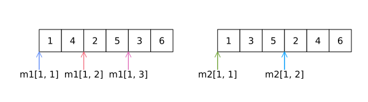

数据集
每种编程语言都提供了一定的最小数量的数据结构集来将多个数据元素表示为容器。即数组、字典、集合和元组，等等。
预定义数据结构
1975年，Niklaus Wirth，一个著名的计算机专家和编程语言PASCAL的作者写了一本书：算法+数据结构=程序。明确强调了数据结构和算法在编程中的重要性。几乎没有任何现代编程语言不提供对数据结构的内建支持，Julia也不例外。许多数据结构是在Julia核心语言中定义的，而更广泛的数据结构是在像DataStrctures.jl这样的包中定义的。在本章中，我们重点介绍该语言在不需要使用任何附加包的情况下定义的数据结构，如：
元组
数组
字典
集合
元组
元组在Julia中非常常见，以至于我们经常不把它们作为一种专门的数据结构来看待。在前面，我们介绍了元组的一些属性，下面将进行更详细的介绍。以下是它的功能概要：
不变性
异构性
可在模式匹配中使用
可通过索引访问元素
下面是一些例子：
julia> a = (1, "string", 1.0)(1, "string", 1.0)julia> typeof(a) # 异构性Tuple{Int64, String, Float64}julia> a[1] # 通过索引访问1julia> a[1] = 6 # 不变性ERROR: MethodError: no method matching setindex!(::Tuple{Int64, String, Float64}, ::Int64, ::Int64)julia> b, c = a # 模式匹配(1, "string", 1.0)julia> b1julia> c"string"
NTuple
NTuple{N, T}是具有N个类型为T的元组的参数定义。
julia> NTuple{3, Int}Tuple{Int64, Int64, Int64}
你可以像这样创建一个接受元组参数的方法：写成f(::NTuple{3, Int})而不要写成f(::Tuple{Int64, Int64, Int64})。
当你希望创建一个包含特定模式的N个参数的元组时，可以使用函数ntuple。
julia> a = ntuple(x->4, 10)(4, 4, 4, 4, 4, 4, 4, 4, 4, 4)julia> typeof(a)NTuple{10, Int64}julia> a = ntuple(i->i*1.0, 10)(1.0, 2.0, 3.0, 4.0, 5.0, 6.0, 7.0, 8.0, 9.0, 10.0)julia> typeof(a)NTuple{10, Float64}
作为集的元组
Tuple可以作为元素集使用。这意味着它们可以被迭代，拥有集的典型函数，如length。
julia> length(a)10julia> for i = 1:length(a) println(a[i]) end1.0 2.0 3.0 4.0 5.0 6.0 7.0 8.0 9.0 10.0
作为类型参数的整数
观察NTuple类型的一个发现是，它有一个作为类型的整数参数。这同样适用于任何可变或不可变类型。让我们创建一个Point类型，它可以被用于2或3维情况。
julia> struct Point{N} data::NTuple{N, Float32} Point(d...)=new{length(d)}(d) endjulia> const Point2D = Point{2}Main.Point{2}julia> const Point3D = Point{3}Main.Point{3}julia> function dist(p1::Point2D, p2::Point2D) dx, dy = (p1.data[1] - p2.data[1], p1.data[2] - p2.data[2]) return sqrt(dx*dx+dy*dy) enddist (generic function with 1 method)julia> function dist(p1::Point3D, p2::Point3D) dx, dy, dz = (p1.data[1] - p2.data[1], p1.data[2] - p2.data[2], p1.data[3] - p2.data[3]) return sqrt(dx*dx+dy*dy+dz*dz) enddist (generic function with 2 methods)julia> dist(Point(1, 2), Point(3, 4))2.828427f0julia> dist(Point(1, 2, 3), Point(3, 4, 5))3.4641016f0
在前面的例子中，我们定义了Point{N}的别名Point2D和Point3D，为这两种类型定义了两个dist函数，并确保可以基于整数值2或3进行分派。Point{2}和Point{3}是两种不同的类型。由于NTuple是集类型，我们可以使用dist方法来处理Point{N}。
julia> struct Point{N} data::NTuple{N, Float32} Point(d...)=new{length(d)}(d) endjulia> function dist(p1::Point{N}, p2::Point{N}) where N sumval = 0f0 for i=1:N d = p1.data[i] - p2.data[i] sumval += d*d end return sqrt(sumval) enddist (generic function with 1 method)julia> dist(Point(1, 2), Point(3, 4))2.828427f0julia> dist(Point(1, 2, 3), Point(3, 4, 5))3.4641016f0julia> dist(Point(1f0, 2f0, 3f0), Point(1, 2))ERROR: MethodError: no method matching dist(::Main.Point{3}, ::Main.Point{2}) Closest candidates are: dist(::Main.Point{N}, !Matched::Main.Point{N}) where N at REPL[2]:1
如果我们不使用参数形式的Point{N}，而是使用Point，会是错误的吗？Point{2}和Point{3}是两种不同的类型。dist函数会为两种不同的类型分别编译吗？我们可以试一下。
julia> struct Point{N} data::NTuple{N, Float32} Point(d...)=new{length(d)}(d) endjulia> function dist(p1::Point, p2::Point) N = length(p1.data) sumval = 0f0 for i = 1:N d = p1.data[i] - p2.data[i] sumval += d*d end return sqrt(sumval) enddist (generic function with 1 method)julia> dist(Point(1, 2),Point(3, 4))2.828427f0julia> dist(Point(1, 2, 3), Point(3, 4, 5))3.4641016f0julia> dist(Point(1f0, 2f0, 3f0), Point(1, 2))ERROR: BoundsError: attempt to access Tuple{Float32, Float32} at index [3]
现在，我们可以将Point{2}和Point{3}参数传递给同一个函数。这说明只创建了一个方法，没有为Point{2}和Point{3}版本编译两个方法。哪个方式是正确的？这是一个设计决策，而不是编程语言的概念。Point2D和Point3D是可混合使用的吗？我们需要支持Point{N1}和Point{N2}的混合dist方法吗？如果是，则下面是一种可能的实现方法。
julia> struct Point{N} data::NTuple{N, Float32} Point(d...)=new{length(d)}(d) endjulia> function dist(p1::Point{N}, p2::Point{N}) where N sumval = 0f0 for i=1:N d = p1.data[i] - p2.data[i] sumval += d*d end return sqrt(sumval) enddist (generic function with 1 method)julia> function dist(p1::Point{N1}, p2::Point{N2}) where {N1, N2} N1 > N2 && return dist(p2, p1) tp = Point(p1.data..., ntuple(i->0f0, N2-N1)...) return dist(tp, p2) enddist (generic function with 2 methods)
我们为具有相同维数
N的Point{N}创建了一个方法。然后我们创建了另一个方法，可以输入不同维度的点。
这里，我们假设第一个参数的维数小于第二个参数。
如果第一个参数不小于第二个参数，我们通过翻转参数来调用方法。从而确保第一个参数的维数小于第二个(N1 < N2)。
我们创建一个与
p2维数相同的临时点(tp)，方法是向更高维度填充零，并调用dist(tp, p2)。
将数值作为类型参数
让我们看看下面的代码控制流：
if val == 1
f1()
elseif val == 2
f2()
elseif val == 3
f3()
else
f4()
end这些函数是否可以使用多分派而不是使用if...elseif...else？
julia> struct MyVal{N} MyVal(N)=new{N}() endjulia> f(::MyVal{N}) where N = Nf (generic function with 1 method)julia> function f(::MyVal{1}) println("Called from 1") endf (generic function with 2 methods)julia> f(MyVal(2))2julia> f(MyVal(1))Called from 1
MyVal{N}基于N的值定义类型。方法
f适用于MyVal{N}的所有值。仅为
MyVal{1}定义了一个专用方法f。现在
f(MyVal(2))调用一般方法，f(MyVal(1))调用特定方法。
单例
当类型定义中没有变量时，实例化时只会为该类型创建唯一一个对象。这样的对象称为单例。上面创建的值类型就是一个单例，因为该类型内不包含任何变量。
julia> MyVal(1) === MyVal(1)truejulia> MyVal(1) === MyVal(2)false
MyVal{1}与MyVal{2}是不同的类型。因此，由初始化创建的对象是两个不同的对象。Julia虽然可以使用值参数，但它可能不是性能最优的方法。Julia内置提供了符合以上所有原则的Val{N}类型，我们将在Julia的性能管理一章中进一步讨论这个问题。
不仅整数类型，即使符号也可以用作值类型参数。
julia> MyVal(:a)Main.MyVal{:a}()
范围
有时我们需要增大或减小的具有连续或固定步长的数字。这称为范围。下面是一些例子：
UnitRange
julia> a=1:51:5julia> typeof(a)UnitRange{Int64}
a是一个UnitRange，这意味着它包含从1到5的所有自然数。UnitRange的增量步长总是1。
julia> for i=a println(i) end1 2 3 4 5
StepRange
julia> b=1:2:51:2:5julia> typeof(b)StepRange{Int64, Int64}julia> for i=b println(i) end1 3 5
b是一个间隔为2的StepRange。
降序范围
julia> c=5:-1:15:-1:1julia> typeof(c)StepRange{Int64, Int64}julia> for i=c println(i) end5 4 3 2 1
c是步长为-1的StepRange。所以在迭代时，我们按5到1的递减顺序输出。
范围用于迭代、索引和初始化集。它们可以有更复杂的参数，也可以将浮点数用于初始值、步长和最终值。下面给出一个浮点数范围的例子。
julia> d=1:2.1:6.01.0:2.1:5.2julia> typeof(d)StepRangeLen{Float64, Base.TwicePrecision{Float64}, Base.TwicePrecision{Float64}, Int64}
数组
数组可以被看作是将对象作为容器保存的具有特定类型的连续内存地址。它们可以通过索引和迭代访问。与元组不同，数组是可变的。可以添加、删除或修改数组中的元素。甚至其他数据结构(如队列和堆栈)也可以使用数组作为容器来实现。本节将介绍数组的基础知识。
数组表示为Array{T, N}，其中T为类型，N为维数。Array{T, 1}或一维数组的别名为Vector，Array{T, 2}的别名为Matrix。这两者在科学计算中都有特殊的意义。
julia> v = [1, 2, 3]3-element Vector{Int64}: 1 2 3julia> m = [1 2 3]1×3 Matrix{Int64}: 1 2 3
v是一个Vector{Int64}或Array{Int64,1}。类似地，m是一个Matrix{Int64}或Array{Int64, 2}。多维数组可以在方括号([])内使用空格()分隔列和分号(;)分隔行而形成。
julia> m1 = [1 2 3; 4 5 6]2×3 Matrix{Int64}: 1 2 3 4 5 6julia> m2 = [1 2; 3 4; 5 6]3×2 Matrix{Int64}: 1 2 3 4 5 6
可以看出，分号(;)在定义中充当行分隔符。
内存布局和索引
数组成员可以通过索引访问。下面是使用前面定义的矩阵m1和m2的一些例子：
julia> m1[1, 2]2julia> m1[2, 2]5julia> m2[1, 2]2julia> m2[2, 2]4
因此，数组成员的访问方式为：array[row_index, column_index]。
数组中的数据存储为分配给某个位置的连续内存块。索引根据索引值指向数组的特定位置。下图显示了m1和m2的内存布局：

与C/C++中数据在这两种情况下都存储为1、2、3、4、5和6不同，Julia中的顺序与FORTRAN一样，以行为主顺序存储数据。这本质上意味着数据的存储方式是将一列中各行的所有元素都挨在一起，然后是下一列。这对于经常使用C/C++或Python编程的人来说，可能会有点不习惯。其次，Julia中的索引与FORTRAN一样从1开始，而不是0。
分页的效果
内部循环增加行号，外部循环增加列号这种内存分页，对于小数组可能无关紧要，但对于非常大的数组会有很多好处。在多维数组中，右边的维度必然构成外部循环，左边的维度必然指定为内部循环。推荐的伪码如下：
for col=1:100000
for row=1:1000
do_something(m[row, col])
end
end构造函数
下面是一些构造函数的示例：
julia> Array{Int}(undef, 1, 2)1×2 Matrix{Int64}: -4426670745849954304 139984303357540julia> Array{Int}(undef, 2)2-element Vector{Int64}: 139985526378864 139985526411360julia> Array{Int, 2}(undef, (2, 3))2×3 Matrix{Int64}: 0 0 139981574111232 139981574111232 0 0julia> Array{Float32}(undef, (2, 3))2×3 Matrix{Float32}: -1.77533f-17 -1.77535f-17 0.0 4.5671f-41 4.5671f-41 0.0
undef是一种特殊类型的对象，用于定义包含未定义值的数组。Julia通常是在实例化对象时对它们进行初始化的。数组是一种容器类型，有时需要在内部值还未知时就定义它们。数组的一般构造函数是Array{T,N}(undef, dims)，其中dims是一个大小为N的元组或一个有N个值的可变参数。在类型参数中指定N是可选的，人们也可以调用函数Array{T} (undef, dims)。
对于Array{T,N}，当T是isbits类型时，数组被完全分配为未初始化的位模式。因此打印的值是不可预测的。例如：
julia> struct A i::Int f::Float64 endjulia> a = A(1, 1); isbits(a)truejulia> aar = Array{A}(undef,(2, 2))2×2 Matrix{Main.A}: A(1, 1.0e-323) A(5, 3.0e-323) A(3, 2.0e-323) A(-1, NaN)
现在让我们看看以下非位类型数组的场景：
julia> struct T a::A b endjulia> b = T(A(1, 1), 1); isbits(b)falsejulia> bar = Array{T}(undef, (2, 2))2×2 Matrix{Main.T}: #undef #undef #undef #undef
当isbits为false时，虽然Array被分配为容器，但实际的对象还没被初始化。实际的对象需要在对数组进行适当的初始化时分配。
julia> bar[1, 1] = bar[2, 1] = bar[1, 2] = bar[2, 2] = bMain.T(Main.A(1, 1.0), 1)julia> bar2×2 Matrix{Main.T}: T(A(1, 1.0), 1) T(A(1, 1.0), 1) T(A(1, 1.0), 1) T(A(1, 1.0), 1)
你还可以发现数组的可变特性，元素在数组使用undef值初始化之后可以被赋值。
就像N维的泛型Array{T,N}一样，Vector{T}和Matrix{T}也可以有类似的构造函数。
julia> Vector{Int}(undef, 3)3-element Vector{Int64}: 139984077918576 139984077848080 139984067808336julia> Matrix{Int}(undef, 3, 3)3×3 Matrix{Int64}: 0 2 3 1 1 1 139985305652992 139985305652993 139985305652993
虽然构造函数是初始化Array的一种方法，但还有其他方便的方法，我们将在下面介绍。
zeros和ones
julia> zeros(Float32, (2, 3))2×3 Matrix{Float32}: 0.0 0.0 0.0 0.0 0.0 0.0julia> ones(Float32, (2, 3))2×3 Matrix{Float32}: 1.0 1.0 1.0 1.0 1.0 1.0julia> ones(UInt8, (2, 3))2×3 Matrix{UInt8}: 0x01 0x01 0x01 0x01 0x01 0x01
给定类型和维数，该函数创建一个数组，以指定的类型填充0或1。
trues和falses
让我们看看下面的两段代码：
julia> zb = zeros(Bool, (8, 8))8×8 Matrix{Bool}: 0 0 0 0 0 0 0 0 0 0 0 0 0 0 0 0 0 0 0 0 0 0 0 0 0 0 0 0 0 0 0 0 0 0 0 0 0 0 0 0 0 0 0 0 0 0 0 0 0 0 0 0 0 0 0 0 0 0 0 0 0 0 0 0julia> sizeof(zb)64
可以看到，Bool变量占用一个字节的存储空间，而这个数组需要64个字节的数据。
julia> z = falses(8, 8)8×8 BitMatrix: 0 0 0 0 0 0 0 0 0 0 0 0 0 0 0 0 0 0 0 0 0 0 0 0 0 0 0 0 0 0 0 0 0 0 0 0 0 0 0 0 0 0 0 0 0 0 0 0 0 0 0 0 0 0 0 0 0 0 0 0 0 0 0 0julia> sizeof(z)8
因为所有的元素都用一个位表示，z的大小只有8个字节(64位)，它创建了一个BitArray，而不是Array。因为使用一个位来存储一个字节的信息，当元素为布尔值时，BitArray是一种高效的数组存储方式。与falses类似，trues(dims)用true位值初始化BitArray。
fill和similar
fill(val, dims)创建一个值为val的数组。数组的类型取决于值val的类型。
julia> a = fill(5.0, (2, 2))2×2 Matrix{Float64}: 5.0 5.0 5.0 5.0julia> a = fill(5, (2, 2))2×2 Matrix{Int64}: 5 5 5 5
similar(a, elem_type, dims)通过使用数组a的元素默认类型和/或dims尺寸，创建一个未初始化的elem_type数组。
julia> b = similar(a, Int)2×2 Matrix{Int64}: 139984082098208 139984082098448 139984076635888 139984092657360
collect
collect(elem_type, collection)是一个从数据集创建数组的实用方法。
julia> collect(1:3)3-element Vector{Int64}: 1 2 3julia> collect(Float64, 1:2:3)2-element Vector{Float64}: 1.0 3.0
reshape
数组在内存中是线性连续分配的，索引以行为主的格式指向它们。reshape是创建数组的另一种方便的方法。
julia> a = collect(1:16)16-element Vector{Int64}: 1 2 3 4 5 6 7 8 9 10 11 12 13 14 15 16julia> b = reshape(a, (4, 4))4×4 Matrix{Int64}: 1 5 9 13 2 6 10 14 3 7 11 15 4 8 12 16julia> c = reshape(b, (2, 8))2×8 Matrix{Int64}: 1 3 5 7 9 11 13 15 2 4 6 8 10 12 14 16julia> d = reshape(c, (8, 2))8×2 Matrix{Int64}: 1 9 2 10 3 11 4 12 5 13 6 14 7 15 8 16
虽然数组的形状改变了，但以行为主的数据排序仍然保持。
hcat, vcat, hvcat
这些方法将输入数组组合起来创建一个新的数组对象。vcat创建一个数组，其中输入数组沿着维度1放置。在一组矩阵上，其效果是数组一个接一个地向下放置。
julia> vcat([1 2; 3 4], [5 6; 7 8], [9 10; 11 12])6×2 Matrix{Int64}: 1 2 3 4 5 6 7 8 9 10 11 12
hcat创建一个数组，其中输入数组沿着维度2放置。在一组矩阵上，其效果是数组一个接一个地向右放置。
julia> hcat([1 2; 3 4], [5 6; 7 8], [9 10; 11 12])2×6 Matrix{Int64}: 1 2 5 6 9 10 3 4 7 8 11 12
hvcat(rows::Tuple{Int}, arrays...)通过使用在第一个参数中给出的rows元组数据来指定每行中连接的参数个数，这样形成的行一个接一个地堆叠起来，形成最终的数组。
julia> hvcat((2, 2, 2), [1, 2], [3, 4], [5, 6], [7, 8], [9, 10], [11, 12])6×2 Matrix{Int64}: 1 3 2 4 5 7 6 8 9 11 10 12
在前面的例子中，向量以2个为一组并排放置。这样就产生了3个中间矩阵。它们是：
\[\begin{bmatrix} 1 & 3 \\ 2 & 4 \end{bmatrix}, \begin{bmatrix} 5 & 7 \\ 6 & 8 \end{bmatrix}和 \begin{bmatrix} 9 & 11 \\ 10 & 12 \end{bmatrix}\]
现在，把它们一个叠一个，就得到了最终的输出。
julia> hvcat(6, [1, 2], [3, 4], [5, 6], [7, 8], [9, 10], [11, 12])2×6 Matrix{Int64}: 1 3 5 7 9 11 2 4 6 8 10 12
同样，在上面的例子中，将6个向量相邻放置，形成一个矩阵。
关联集
在关联集中，集的元素以键/值对的形式存储。可以通过索引键或对键进行高效搜索来访问这些值。常用的有字典、多维字典、集合(尽管集合只保留键而忽略值)。大多数关联集都派生自抽象类型AbstractDict{K, V}。
字典
Dict{K,V}是Julia中一个相对简单的关联集。参数K指定键的类型，V指定值的类型。唯一的要求是必须为类型K定义一个哈希函数。
julia> d = Dict("a"=>1, "c"=>2, "b"=>3)Dict{String, Int64} with 3 entries: "c" => 2 "b" => 3 "a" => 1julia> d["b"]3julia> d["a"]1julia> println(d)Dict("c" => 2, "b" => 3, "a" => 1)
Dict{K,V}不能为同一个键保存多个值。定义中重复的键将覆盖先前定义的值。
julia> d = Dict("a"=>1, "c"=>2, "b"=>3, "a"=>4)Dict{String, Int64} with 3 entries: "c" => 2 "b" => 3 "a" => 4
get方法
get(dict, key, defval)方法用于从字典对象中提取信息。下面是一些例子：
julia> get(d, "a", 3)4julia> get(d, "e", 0)0
当该键是字典的一部分时，将返回与该键相关联的值。然而，当该键不存在时，将返回函数中指定的默认值。
大多数情况下，Dict{K,V}对象可以像数组一样使用，只不过索引是键。使用getindex或它的别名([])从字典中获取值。与get方法不同的是，当在字典中找不到键时，getindex会抛出一个错误异常。
julia> getindex(d, "e")ERROR: KeyError: key "e" not foundjulia> getindex(d, "a")4julia> d["e"]ERROR: KeyError: key "e" not found
get!(dict, key, value)方法类似于get(dict, key, defval)方法，但是会在字典中键不可用的位置插入键值对。在前面的例子中：
julia> get!(d, "a", 0)4julia> get!(d, "e", 0)0julia> dDict{String, Int64} with 4 entries: "c" => 2 "e" => 0 "b" => 3 "a" => 4
在Julia中，通常的惯例是在函数名的末尾添加一个叹号(!)字符来表示要改变函数的参数值。由于get!(dict, key, value)方法更改对象字典, 叹号字符被添加到末尾。
setindex!方法
与get方法类似，setindex!方法或其别名([])用作给左侧元素赋值。
julia> d["e"] = 1010
或比较不常用的用法：
julia> setindex!(d, 11, "e")Dict{String, Int64} with 4 entries: "c" => 2 "e" => 11 "b" => 3 "a" => 4
哈希化
要使Dict{K,V}正常工作，需要实现hash(k::K, h::Int)。对于k的每个实例，函数返回一个唯一的整数。这种唯一性确保在Dict{k,V}中只存储一个键。
集合
Set是一个集，其中每个元素只能保留一个实例。集合中元素的顺序不重要。下面的示例给出了一些集合方法。
julia> s = Set([2 3 4 5 1 2 3])Set{Int64} with 5 elements: 5 4 2 3 1julia> 6 in sfalsejulia> 5 in struejulia> t = Set([4 5 7 8 9])Set{Int64} with 5 elements: 5 4 7 9 8
并和交
julia> union(s, t)Set{Int64} with 8 elements: 5 4 7 2 9 8 3 1julia> intersect(s, t)Set{Int64} with 2 elements: 5 4julia> union!(s, t)Set{Int64} with 8 elements: 5 4 7 2 9 8 3 1julia> sSet{Int64} with 8 elements: 5 4 7 2 9 8 3 1
union!类似于union，但会更新第一个参数。类似于union，symdiff和setdiff方法被定义为对称差和集合差。issubset方法提供判断一个集合与另一个集合的子集关系。
迭代
迭代是集的基本操作之一。我们将介绍如何在集中使用各种迭代操作。
for循环
Julia中经典的for循环是将一个索引变量映射到一个范围对象并遍历它。
julia> for i=5:-2:1 println(i) end5 3 1
循环不仅仅局限于范围对象。也可以使用其他类型的集。下面是一些例子：
julia> b = [1.0 2 3; 4 5 6; 7 8 9];julia> for i=b println(i) end1.0 4.0 7.0 2.0 5.0 8.0 3.0 6.0 9.0
除了for...=以外，for...in也可以被使用。for循环的这种表示与前面类似，只是语法看起来更适合于集。让我们看看它在字典对象上的用法。
julia> for p in d println(p) end"c" => 2 "e" => 11 "b" => 3 "a" => 4
Dict{K,V}元素存储为Pair{K,V}，并默认打印为：K => V。
julia> for (k, v) in d println("Key: ", k, " Value: ", v) endKey: c Value: 2 Key: e Value: 11 Key: b Value: 3 Key: a Value: 4
function...do
让我们来看一个函数，它以数组作为输入，并以数组的形式返回所有值的平方。
julia> function collect_square(v) a = similar(v) for i=1:length(v) a[i] = v[i]*v[i] end return a endcollect_square (generic function with 1 method)julia> collect_square(1:4)4-element Vector{Int64}: 1 4 9 16
如果我们要扩展这个函数，使其在计算任意函数而不仅仅是平方后返回值，我们可以按以下方式扩展它：
julia> function collect_function(f::Function, v) a = similar(v) for i=1:length(v) a[i] = f(v[i]) end return a endcollect_function (generic function with 1 method)julia> collect_function(x->x^3, 1:4)4-element Vector{Int64}: 1 8 27 64
另一种调用相同方法的方式是使用function...do符号。
julia> collect_function(1:4) do x return x^3 end4-element Vector{Int64}: 1 8 27 64
map是一个具有类似符号的函数。它将集元素的每个值映射给函数，并将函数求值的结果作为集返回。
julia> map(1:4) do x return x^3 end4-element Vector{Int64}: 1 8 27 64
迭代框架
我们看到了几个使用for循环遍历序列和集的例子。这实际上是通过完成迭代框架实现的。如果要编写自定义的迭代器，就需要实现这个框架。下面介绍了一些基本的思想。
julia> v = collect(3:2:10);julia> for i=v println(i) end3 5 7 9
同样的可以写成以下形式：
julia> next = iterate(v)(3, 2)julia> while next !== nothing value, state = next println(value) next = iterate(v, state) end3 5 7 9
迭代方法
iterate(collection)返回第一个元素和初始状态，如果不存在值则返回nothing。
在前面示例的返回值(3,2)中，3是第一个元素的值，2是表示状态的内部参数。尽管它看起来像是下一个值的索引，但我们不应该有这种假设，因为它完全是由特定的实现来定义的。
iterate(collection，state)返回下一个元素和状态，如果不存在额外的元素则返回nothing。
必须为所有的迭代器类型实现迭代方法。
可选方法
这些方法需要由迭代器作者选择性地定义。
IteratorSize(IterType)是一个辅助方法，它表明迭代器是否具有长度或形状。基于此确定必须为集迭代器定义尺寸或/和长度方法。
julia> Base.IteratorSize(Vector{Int})Base.HasShape{1}()
IteratorEltype(IterType)是一个辅助方法，它决定迭代器是否具有特定的元素类型。
julia> Base.IteratorEltype(Vector{Int})Base.HasEltype()
eltype(IterType)返回迭代方法第一个参数的类型。
julia> eltype(Vector{Int})Int64
实例
我们创建一个Squares类型，它将提供一组直到类型中存储值为止的数字的平方序列。
julia> struct Squares value::Int endjulia> Base.iterate(s::Squares) = s.value <= 0 ? nothing : (1, 2)julia> Base.iterate(s::Squares, state) = s.value < state ? nothing : (state*state, state+1)julia> for i=Squares(3) println(i) end1 4 9
上面的例子只适用于简单的for循环。使用collect方法创建数组还无法工作。
julia> collect(Squares(3))ERROR: MethodError: no method matching length(::Main.Squares) Closest candidates are: length(!Matched::Union{Base.KeySet, Base.ValueIterator}) at /usr/share/julia/base/abstractdict.jl:58 length(!Matched::Union{LinearAlgebra.Adjoint{T, S}, LinearAlgebra.Transpose{T, S}} where {T, S}) at /usr/share/julia/stdlib/v1.7/LinearAlgebra/src/adjtrans.jl:171 length(!Matched::Base.Generator) at /usr/share/julia/base/generator.jl:50 ...
所以我们添加一个length方法来实现这个目的。
julia> Base.length(s::Squares)=s.valuejulia> collect(Squares(3))3-element Vector{Any}: 1 4 9
数组可以被正确填充，但类型是Any。定义eltype(IteratorType)方法将确保创建正确的数组类型。
julia> Base.eltype(::Type{Squares}) = Intjulia> eltype(Squares)Int64julia> collect(Squares(3))3-element Vector{Int64}: 1 4 9
Type{Squares}是一种特殊类型，它的唯一实例对象是Squares。这是必需的，因为eltype是该类型本身而不是该类型实例的函数。
生成器和推导
在Julia中，数组和集在科学计算中被广泛使用。语言必须提供创建和操作数组的方便途径。推导表示为创建这样的数组提供了便利。
julia> [i*i for i=1:3]3-element Vector{Int64}: 1 4 9julia> [i*j for i=1:3, j=1:3]3×3 Matrix{Int64}: 1 2 3 2 4 6 3 6 9
在前面的示例中，推导式用于创建单维和多维数组。下面是一个索引可能依赖于另一个索引的示例。
julia> [i*j for i=1:3 for j=i:3]6-element Vector{Int64}: 1 2 3 4 6 9
推导式计算完整的数组。有时也需要使用称为生成器的延迟执行迭代器(在需要时计算值，而不是所有元素)。
julia> gen=(i*j for i=1:3 for j=i:3)Base.Iterators.Flatten{Base.Generator{UnitRange{Int64}, Main.var"#2#3"}}(Base.Generator{UnitRange{Int64}, Main.var"#2#3"}(Main.var"#2#3"(), 1:3))julia> for v=gen println(v) end1 2 3 4 6 9